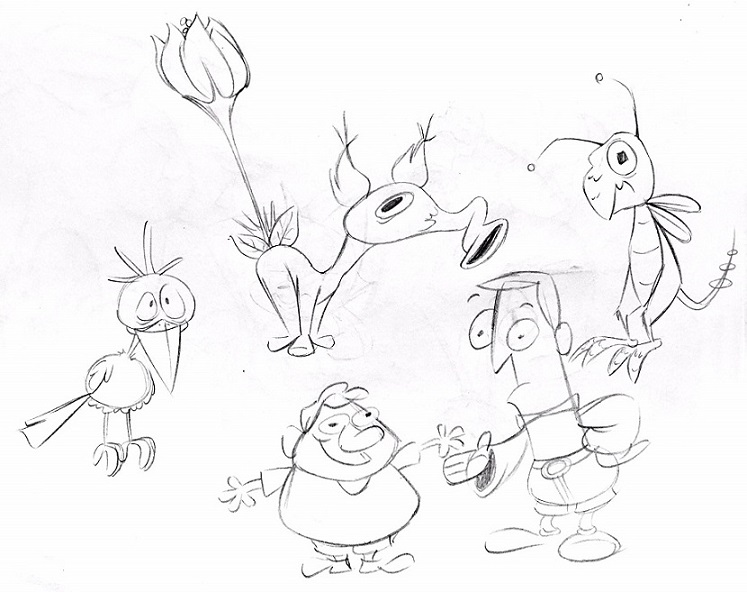
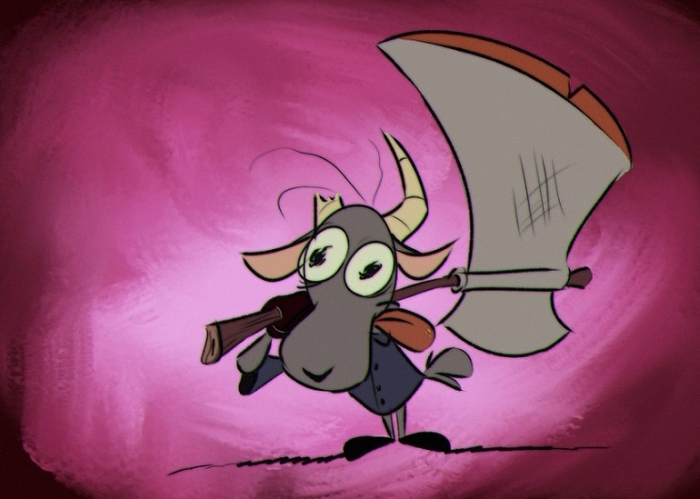
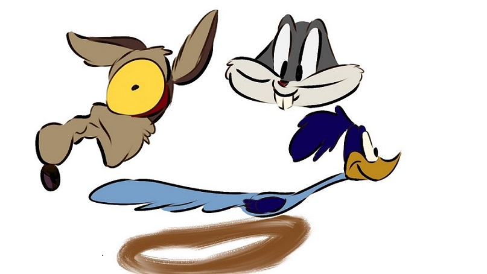

Cryllic is an online art-sharing platform. Or at least it would be if this was an actual website. Right now it is just a single page meant to prove that I can make websites that function correctly. By the way I made that website icon up there myself. Pretty neat, huh? Anyways I will stop talking now. Here is the rest of the page.
Here at Cryllix, we take pride in knowing that this site works properly. And by we I mean me. It is a one man show around here. Judging by the layout of this site, I am going to assume you got to this section by clicking one of the big buttons up top. I would not blame you. I mean it is kind of one of the centerpieces of this whole page, so it is kind of expected that you would use it to get here.
Given that this is a fake art website, check out some of the thing ive drawn myself:
  That is all fine and good, but I bet you are wondering how you can sign up for such a website?
Well here ya go...
This website was entirely created using HTML and SCSS/CSS code. The page icon was created specifically for this page using pixel art. All fonts/images used throughout the page are in the correct file format.
Exit Popup